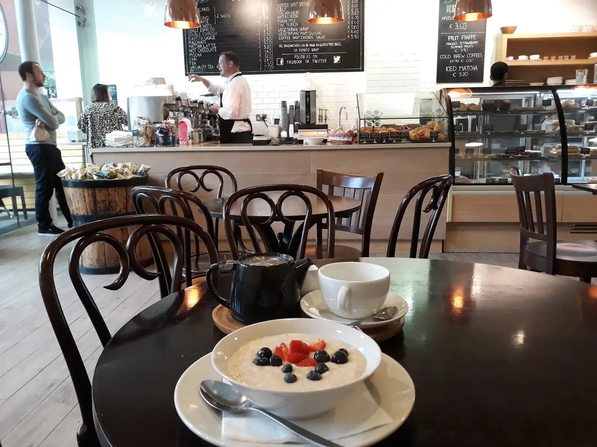
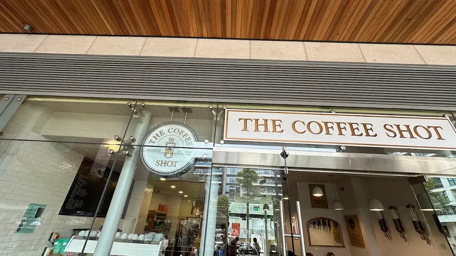

Café on the Plaza, Sandyford
Badger & Dodo coffee, sandwiches and a terrace. Weekdays 7:00 to 18:00.
Find us
The Plaza, Sandyford
- Monday to Friday
- 7:00 to 18:00
- Saturday
- 8:00 to 18:00
- Sunday
- 9:00 to 17:00
- SeatsInside, and on the terrace over the Plaza
- AccessWheelchair-accessible entrance
